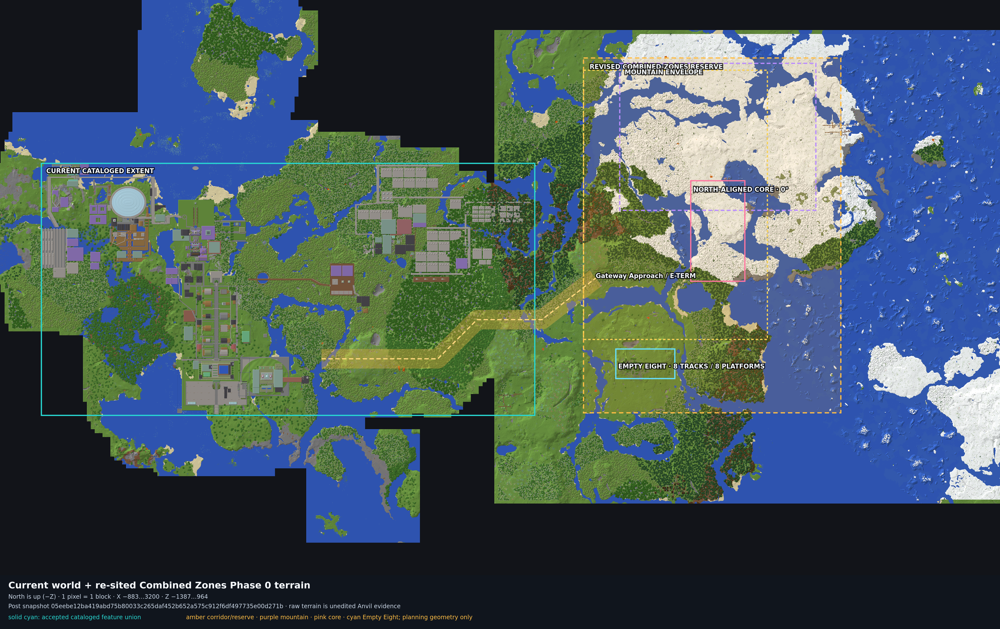
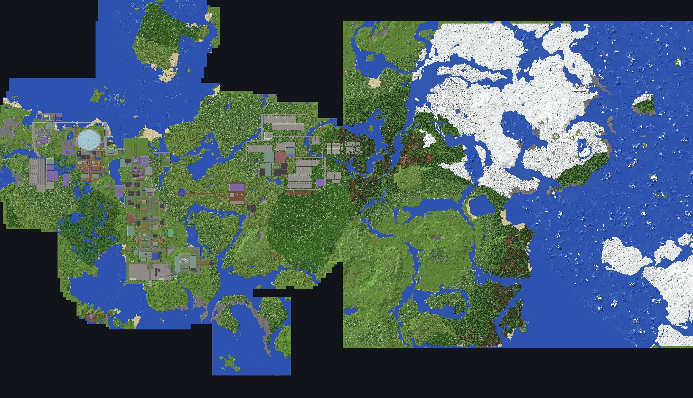
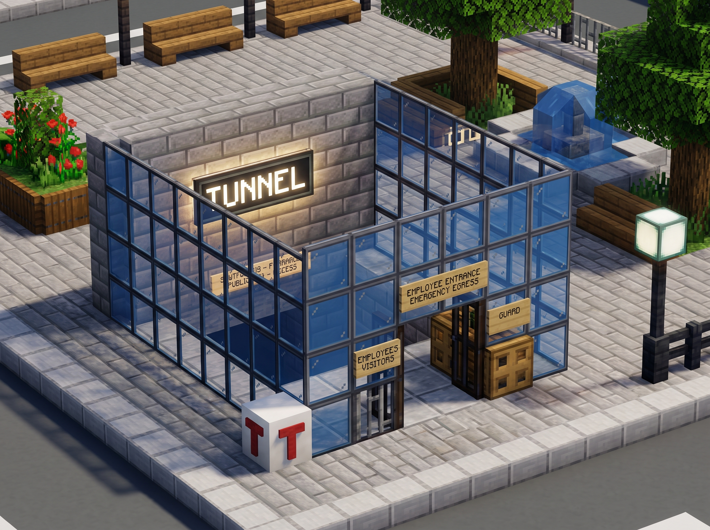
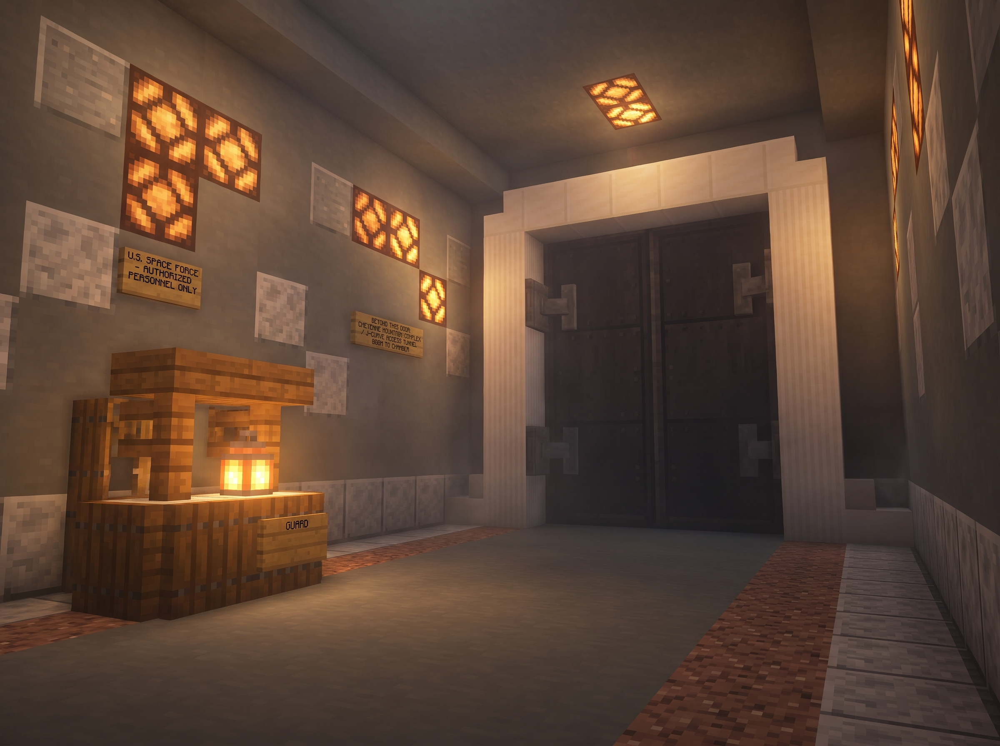
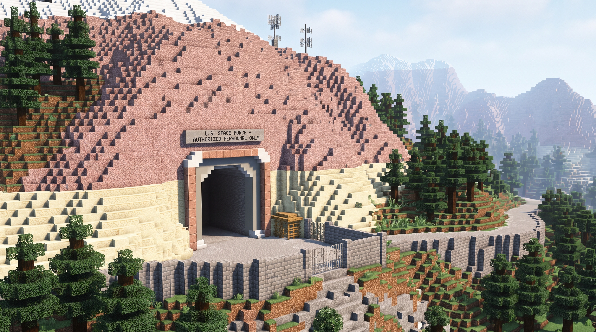
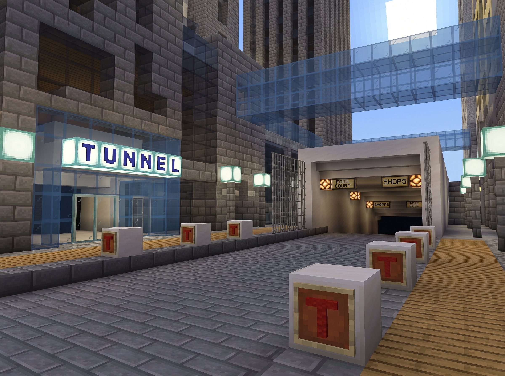

Current status
The plan is selected. Construction is not released.
Phase 0 proved the revised site suitable for detailed design. The sole owner has delegated autonomous research, design, and planning, allowing 20 conservative choices to be frozen. The second offline remediation wave fixed the planning basis for B03, B07, B09, B10, closed drainage, and fail-closed life-safety reservations; only B11’s exact external interfaces remain a geometry choice. Three design decisions and every physical release still wait on complete-save, future-cell, technical, ownership/interface, mechanism, and authorization evidence.
Review interpretation. “Partial pass” means the offline records are internally useful and validated. It does not mean part of the world may be built. The R00 audit is cycle-free and reports one of seven design-freeze gates passing; the whole-lifecycle validator still keeps all R00…R13 releases blocked. There are no other project decision-makers: remaining outside inputs are evidence and later hash-bound release authorization.
Current map placement
The accepted world stays west; the new reserve starts east.
Ravensreach remains the canonical Old Town. The revised Combined Zones reserve begins 200 blocks east of the catalog’s eastern edge. The adopted normalized core is north-aligned at zero degrees; the Empty Eight sits south of Gateway Approach.
accepted catalog union
corridor / reserve
mountain envelope
Houston core
Empty Eight

{kind=link}

Adopted transform. worldX = 2048 + localX and worldZ = −328 + localZ. The vertical adaptation remains a coordination study only; exact owner-specific integer rounding is not frozen for construction.
The physical idea
One arrival sequence, three inherited programs, two new adapters.
Visitors leave the accepted current world through the East Corridor, enter the landscaped Gateway Approach, then move into the combined architectural sequence. The concealed Empty Eight is a separate branch and separate release scope.
| Element | Current adopted role | Planning anchor or envelope |
|---|---|---|
| C1 East Corridor | Highway, passenger rail, protected walking, drainage, and utilities designed together; 13-block north rail strip remains empty first. | (430,80) → (1550,−250); 56-block reservation, 80-block land take |
| Gateway Approach | Landscaped current-world adapter with Gateway Gardens, Alpine Junction, and Approach Commons. | x=1500…2250, z=−1100…0 |
| Empty Eight | Eight east–west tracks, eight platforms, monumental mall/concourse, 24 capped retail shells, eight sealed east interfaces. | x=1632…1872, y=38…54, z=40…160; rail Y=40 |
| Houston + tunnels | Public arrival core and city-in-a-city pedestrian system. | Core x=1979…2117, z=−397…−259 |
| Public shaft + SubTropolis | Public descent into the 200×200 industrial cavern, then transfer to controlled circulation. | Head (2108,72,−398); lower lobby near (2108,−56,−428) |
| Service/contact + Cheyenne | Ascending service rail, architectural-composite geology story, blast-door threshold, secure chamber program. | Contact study near (2008,130,−688); chamber Y≈145…188 |
| Mountain + summit | Continuous no-ravine envelope around nested programs, three recorded default-deny structure-start cores, funicular and return road. Present cells are observed only for the west igloo and shipwreck; the east-igloo core is entirely air in the copied snapshot and remains reserved in place without reconstruction, relocation, removal, access, or reuse. | x=1648…2448, z=−1128…−528; summit study (2048,304,−828) |
Maps, renders, and screenshots
What exists, what is proposed, and what is only visual intent
Each visual below is labeled by evidentiary role. Current-world screenshots show accepted context. Masterplan 04 renders communicate retained architectural language, not the adopted site’s surveyed shape or finished future state.
No built-project screenshots exist. Combined Zones has not been physically constructed. The observed screenshots below show the accepted current world near planned interfaces; every image of the proposed complex is concept-only.


{kind=link}

{kind=link}

{kind=link}

{kind=link}

Excluded visuals. The eight unsealed diagrams in the map authority note contain rejected transforms, retired corridor geometry, or the former northern terminal. The 04 map-integration annex depicts a separate-world/duplicate-Old-Town concept. None is used here as current evidence.
Decision ledger
Twenty delegated choices are frozen; three decisions remain technical HOLDs.
The sole owner authorized autonomous planning selections. The remaining holds are not waiting for a committee: they require complete source evidence, exact future cellsets, deterministic checks, ownership/interfaces, and later release authorization.
Resolved
Build in the current world
Use Masterplan 05’s vertical adaptation. The native-height separate-world alternative is not active. Exact construction rounding remains gated.
Delete unsurveyed L2 from active scope
The wet, uncataloged study point is omitted. This is a planning deletion—not demolition authority and not permission to invent a replacement.
Reserve rail before building rail
Keep the 13-block north-flank strip at offsets −30…−18 empty. Early highway crossings must clear-span it.
Fact-check the geology story; omit C2
Use an explicit architectural-composite plaque. No natural-contact, thrust/overthrust, laccolith, or “270 Ma” claim. The optional portal has no landing, mechanism, command, or target cell.
On HOLD
C1 civil solution
Frozen: exact R140/R120/R140 raster, 1,216 stations, independent profiles, 56/80-block section, drainage collection, and 30,859,392 full-height region cells across 80,363 land-take columns.
Post-approval development: ten strict-clear capped sumps partition an exact 432-cell candidate set. At the C01 stack, 7,803 terminal cells and a 944,298-cell vertical load-path reservation now have exact one-owner and sealed-directional proposals; loading precedence withholds 45 of 54 local D02 cells and leaves nine proposed terminal caps.
Still missing: capacity/failure, structural/geotechnical and settlement acceptance, ISSUE-002 field condition, complete-save, hydraulics/receivers, materials, final ownership/interfaces, and technical acceptance.
Hydrology and protected relics
Frozen: full-height fluid census, core-plus-one-cell minimum exclusions, absent east-site reservation, logical controls, exact future-state schema, no-diversion rule, and D05-S01 condition/access facts.
Post-approval compiler: all 14,768,553 FM-01 candidate cells are partitioned into 14,580,291 bulk-stone and 188,262 exposed-finish proposals. All 754,224 support gaps are classified exactly once. Treatment classes are proposed for 17,997 cells; 736,227 hydro/cryosphere cells and every support canonical state remain null.
Still missing: accepted support states, hydrology/geotechnical and relic conclusions, B09 systems, ownership/interfaces, complete-save evidence, and technical acceptance. Accepted future and construction cells remain zero.
Empty Eight external life safety
Frozen: two independent dry 7×7 surface continuations and landings at (1652,80,148) and (1852,71,148), plus protected stair/lift reserves and four independent capped local vent risers.
Post-approval setout: all 73 exact references validate; 31 stair/lift, vent, smoke/barrier, power, drainage, and fire/service layers compile to 9,065 canonical proposal cells after 21 exact precedence records. Twenty-nine commissioning contracts remain non-executable.
Still missing: accepted functional states, external routes/receivers, actual circuit sources and controls, structural/material design, ownership/interfaces, complete-save evidence, technical acceptance, and commissioning. Every opening remains sealed.
This autonomous evidence update
B03 · Cheyenne J-curve
The exact 800-step, two-bend east–north–west baffle is selected for planning. Its symmetric 5×4 excavation reservation contains 15,972 cells; lining, drainage, utilities, egress, ownership, and construction acceptance remain HOLD.
B07 · public shaft
B07-C-WEST-2 is the first conservative dogleg candidate that clears both generated-structure excavation and interaction conflicts. Its excavation still contains 38 water cells, so hydrology, mechanism, smoke, drainage, and egress remain HOLD.
B08 · service tunnel
The selected route is exactly 220 horizontal steps with 58 rising and 162 level steps. Its 7,878-cell 6×6 reservation is clear of recorded structures, relics, and fluids; technical design remains HOLD.
B09 + B10 · east-face system
B09 now has a 561-point, 7,800-cell exact technical reservation with nine station, guideway/support, maintenance/egress, rescue, power, and drainage layers. The 36-cell B08 portal and 12-cell summit interfaces remain sealed. Eight mechanism/geotechnical/hydrology/life-safety/complete-save classes remain HOLD, and accepted cells stay zero.
The subjective geometry-choice count is zero, and the canonical G03 v2 registry now exists. Ten scopes are normalized and eight expanded domains are exact, including the selected B07 west-two geometry, all three B11 road proposal domains, and the D06 detailed interaction union. Fifteen null/planning-only domains remain. Five disclosed cross-scope overlaps are coordination findings, not accepted interfaces; exact proposal geometry does not self-pass G03.
Known ownership ambiguity is now compiled out at proposal level. Twenty-seven logical owner records cover 16,542,566 known proposal/reference cells after 26 exact precedence adjudications. Seventy-eight directional, default-deny interface contracts include 64 exact cell sets and 25 transition-pair hashes. The B11/Houston split and four detailed D06 seams are endpoint-validated. Fourteen missing interfaces remain explicit null/HOLD; final owner and interface acceptance counts are still zero.
G06 v2 has exact clearance for every non-null G03 domain. Fifteen domains were checked against all 114 generated starts and all three frozen protected cores: 1,755 exact domain/subject evaluations, all zero-overlap. G06 still HOLDs because 15 domains are null, positive expert margins and the complete save are absent, and D05 support-status evidence intersects the shipwreck core in 126 unaccepted cells.
The surface road now has exact proposal geometry too. Its 2,392 road cells use the same -3…+4 Z-offset convention as the shell; the 11,960-cell interaction union and 5,980 load/drainage/utility reservation union are dry in the copied region evidence. The B12 load seam is 4,784 cells, Houston coordination is 260 cells, and all material, earthwork, retaining, hydraulics, utilities, structural, geotechnical, complete-save, ownership/interface, and release gates remain HOLD.
Sequencing reconciled without a waiver. D02, D05, and D06 close only from accepted pre-R00 design and external evidence. R00 then freezes G01–G07. R01 is the subsequent bounded physical validation, must pass G01–G19, and cannot resolve a design decision. R02 remains blocked until R01 is accepted.
D07 plaque wording approved for design
- DESIGN CONTACT
- Pikes Peak Granite analogue
- Colorado batholith · about 1.1 billion years
- Bethany Falls Limestone analogue
- Upper Pennsylvanian · Missourian · Kansas City region
- Architectural composite · not one natural outcrop
Delivery and release
Serial phases, fail-closed advancement
Each phase advances only after its exit gate passes. Phase 0 passed for detailed design. Phase 1 remains active and blocked; therefore Phase 2 has not begun.
Before a transaction
G01–G14 must independently pass against identical artifact hashes. Current evaluations are intentionally empty.
During execution
G15 requires journaled atomic execution. Exact forward/rollback packages and strict-noop source guards do not yet exist.
Before acceptance
G16–G19 add immutable post-state, route/media QA, catalog import, and final acceptance. No narrative waiver is allowed.
Current next step: post-approval compilers now provide exact D02 technical, D05 future/support, D06 mechanism-contract, P1-B12 passive-shell, G03 v2 canonical-setout, and proposal-level one-owner/directional-interface evidence. Capture and audit a complete immutable saved-world package containing region/, entities/, poi/, and level.dat; close the 15 G03 null domains and the registry's remaining null interfaces; then perform technical and final owner/interface acceptance against one identity. R00 remains G01 PASS and G02–G07 HOLD: no physical pilot or live construction may start.
Review guide
What is selected, and what evidence still has to exist
The project has one decision-maker: you. Your autonomous-planning directive is now recorded. Review remains welcome, but the work is not waiting for a second approver.
Delegated selections now frozen
- The
01 + 02 + 03 → 04 → 05composition and north-aligned current-world placement remain controlling. - The exact-radius C1 raster controls alignment; the authored staircase is non-controlling surface rhythm.
- Relic cores plus one cell are minimum planning exclusions; the absent east site stays reserved without reconstruction or reuse.
- Empty Eight uses two independent egress cores, protected stair plus lift reserves, separate smoke/outlet groups, fail-closed barriers, and sealed future interfaces.
- D02 uses ten capped sump candidates across 432 cells;
ROAD-LOW-001remains a no-build hold with no selected receiver. - D02/C01 now has an exact bounded loading/ownership/interface proposal; 45 local drainage cells remain withheld and nine terminal caps remain proposed only.
- D05 now has an exact sparse proposal for all 14,768,553 candidate cells and a complete one-of classification for all 754,224 support gaps; acceptance remains zero.
- D06 now has 31 exact detailed setout layers and 29 commissioning contracts; none is accepted/executable and every external opening remains sealed.
- B09 now has exact station, guideway/support, maintenance/egress, rescue, power/control, and drainage reservations; its mechanisms and technical acceptance remain null/HOLD.
- B03’s exact 800-step J-curve, B07 west-2 dogleg, B09 east-face centerline, and B10
FM-01compact-east envelope are frozen as planning bases. - P1-B11's exact 299-point Grand Avenue profile and default-deny external interfaces are owner-accepted; the PassageWay side remains a zero-cell deferral and future lines remain sealed.
- P1-B11's eight-wide surface-road setout is now an exact proposal coordinated with P1-B12; its side bias and technical systems are not yet accepted construction.
- P1-B12 reserves a precise passive shell below Grand Avenue. It is a conditional pre-road option, not accepted construction, and all caps/interfaces remain closed.
- Five conservative vertical/child/pillar/omission geometry conventions are frozen for exact compilation.
Technical evidence still required
- One same-moment complete saved-world package; every repository candidate is region-only.
- C01/ISSUE-002 ownership and loading disposition, exact civil typologies, hydrology/outfalls, and construction quantities.
- Fifteen still-null or planning-only G03 domains, fourteen null interface geometries, state transitions, positive-margin/expert protected-feature review, and final acceptance of the compiled 27-owner/78-interface registry.
- Technical acceptance of the FM-01 mountain, including its 754,224 support gaps, hydrology, relic support, all-structure clearance, materials, maintenance, and egress.
- Technical acceptance of Empty Eight smoke, vent, lift, barrier, drainage, fire/service, emergency, outlet, ownership, and interface mechanisms; every opening remains sealed.
- Only after R00: guarded operations, rollback, preflight, live clearance, exact manifest-bound release authorization, and post-state acceptance.
Controlling source package
- Masterplan 05 — plan of record
- 04→05 authority reconciliation
- Machine authority bridge
- Current coordinate registry
- Phase 0 survey evidence
- Authoritative map QA
- Phase 1 decision ledger
- C1 civil design record
- D02 sole-authority design packet
- D02 full-height region and C01 evidence
- D02 hydrology and outfall audit
- D02 closed-drainage alternatives · machine packet
- D02 sole-owner acceptance packet · hash-bound machine packet
- D02 post-approval technical-development matrix · machine evidence
- D02/C01 bounded loading and interface proposal · machine evidence
- Hydrology and relic-buffer record
- D05 conservative planning controls
- D05 relic condition/access survey
- D05 future-state compiler contract
- D05/B09/B10 future-mountain alternatives · machine packet
- D05 sole-owner conditional-policy packet · hash-bound machine packet
- D05 exact sparse future-state proposal · machine evidence
- D05 support/material proposal · machine evidence
- Empty Eight and geology record
- D06 egress and geometry record
- D06/B07 life-safety alternatives · machine packet
- D06 sole-owner acceptance packet · hash-bound machine packet
- D06 mechanism and commissioning contracts · machine evidence
- D06 detailed mechanism/circuit setout · machine evidence
- B07/B08/B09 connector geometry
- B09 funicular technical-reservation proposal · machine evidence
- B03 exact Cheyenne J-curve geometry · machine packet
- Owner-delegated selection ledger
- P1-B11 external-interface owner packet · hash-bound machine packet
- P1-B11 surface-road technical proposal · machine evidence
- P1-B12 subsurface alternatives · exact passive-shell candidate
- Visual HTML5 owner-review report · recorded owner acceptance · acceptance identity · immutable owner-review bundle
- Proposed one-owner and directional-interface registry · machine evidence
- Canonical G03 sparse setout · machine evidence
- G06 proposed-set protected-feature clearance · machine evidence
- Phase 1 site-gate audit
- R00 G01–G07 readiness audit
- Release-engineering plan
- Machine release contract
- Map authority and retired-diagram boundary
Evidence identity and limitations
The accepted construction baseline is snapshot c39d0d67…fa6751. The Phase 0 terrain rerun post snapshot is 05eebe12…271b and is siting evidence, not a new accepted construction release. The durable catalog contains 1,215 records.
This review report is a human-readable companion. The linked Markdown/JSON artifacts remain controlling when a summary here is less precise. The report itself does not authorize an edit, create an owner, approve a buffer, or satisfy a release gate.
The HTML works offline from this repository checkout and uses repository-relative media links; it is not a single-file portable archive. Keep the repository layout intact when reviewing it.